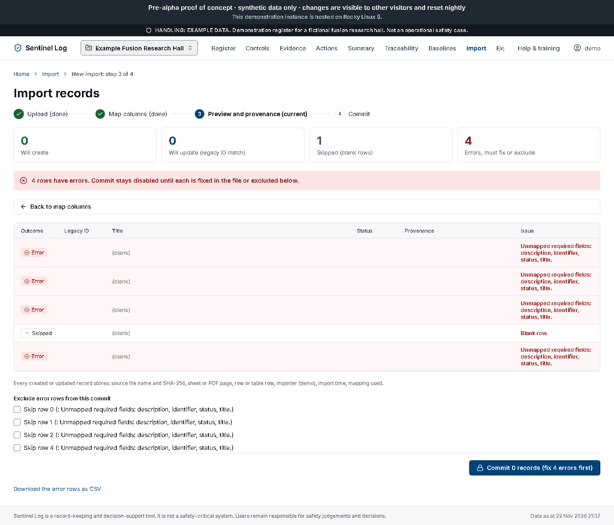

Import from a PDF
- An administrator uploads tables-uat.pdf as hazards for Meridian; Sentinel Log extracts the largest table per page and moves to column mapping. See Figure 1.

Figure 1. PDF import preview and provenance - An administrator maps Identifier, Title, Description, and Status and continues; the preview shows the dry run with page provenance per row.
- An administrator confirms; the done page states per-record provenance naming file, page, and table row.